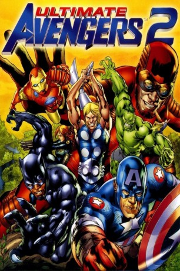

#694 Ultimate Avengers 2
 
 IMDB-Wertung: 6.7 / 10
IMDB-Wertung: 6.7 / 10  Metascore: 0
Metascore: 0 
Die mächtigsten aller Helden müssen ihren Krieg gegen die Aliens fortsetzen. Dieses Mal marschieren diese zusammen mit Captain Americas Erzfeind Kleiser, welcher die Gestalt der Aliens veränderte, in ein verborgenes Dorf in Afrika ein. Dessen König ist der Schwarze Panther. Als Kleiser den Vater des Schwarzen Panthers – T´Chaka – tötet, reist der Schwarze Panther in die USA, um sich Hilfe bei Captain America zu holen. Die Avengers müssen nach Afrika, um dort einen blutigen Krieg gegen die einmarschierenden Invasoren zu führen.
Jahr: 2006
Dauer: 73 Minuten
FSK:
Land: USA Studio: Lions Gate Films Home EntertainmentTonspuren: DD5.1 - ,
Untertitel: Englisch,
Auflösung: 1080p (1920x1080) Größe: 6502 MB
Genre: Action, Sci-Fi, Abenteuer, Animation/Trick
Regisseur: Will Meugniot, Dick Sebast, Bob Richardson
Drehbuch: Mark Millar, Bryan Hitch, Greg Johnson, Craig Kyle, Greg Johnson
Soundtrack: Guy Michelmore
Darsteller:
Datei: X:\Comic-Trick\Ultimate Avengers\Ultimate Avengers 2 (2006, FSK, 1920x1080).mkv seit 16.03.2015
Festplatte: Comicverfilmungen+MusikCD
 Alle Filme aus Gruppe 'Comic-Trick\Ultimate Avengers'
Alle Filme aus Gruppe 'Comic-Trick\Ultimate Avengers'